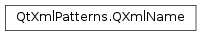

QXmlName¶
Synopsis¶
Functions¶
- def
__eq__(other) - def
__ne__(other) - def
isNull() - def
localName(query) - def
namespaceUri(query) - def
prefix(query) - def
toClarkName(query)
Static functions¶
- def
fromClarkName(clarkName, namePool) - def
isNCName(candidate)
Detailed Description¶
The
PySide2.QtXmlPatterns.QXmlNameclass represents the name of an XML node, in an efficient, namespace-aware way.PySide2.QtXmlPatterns.QXmlNamerepresents the name of an XML node in a way that is both efficient and safe for comparing names. Normally, an XML node represents an XML element or attribute, butPySide2.QtXmlPatterns.QXmlNamecan also represent the names of other kinds of nodes, e.g., QAbstractXmlReceiver::processingInstruction() and QAbstractXmlReceiver::namespaceBinding().The name of an XML node has three components: The namespace URI , the local name , and the prefix . To see what these refer to in XML, consider the following snippet.
<Code snippet "/tmp/qt-doc-test-511/_qt5/qtbase/patternist/mobeyDick.xml" not found>For the element named book ,
PySide2.QtXmlPatterns.QXmlName.localName()returns book ,PySide2.QtXmlPatterns.QXmlName.namespaceUri()returns http://example.com/MyDefault , andPySide2.QtXmlPatterns.QXmlName.prefix()returns an empty string. For the element named title ,PySide2.QtXmlPatterns.QXmlName.localName()returns title ,PySide2.QtXmlPatterns.QXmlName.namespaceUri()returns http://purl.org/dc/elements/1.1 , andPySide2.QtXmlPatterns.QXmlName.prefix()returns dc .To ensure that operations with
PySide2.QtXmlPatterns.QXmlNameare efficient, e.g., copying names and comparing them, each instance ofPySide2.QtXmlPatterns.QXmlNameis associated with aname pool, which must be specified atPySide2.QtXmlPatterns.QXmlNameconstruction time. The three components of thePySide2.QtXmlPatterns.QXmlName, i.e., the namespace URI, the local name, and the prefix, are stored in the name pool mapped to identifiers so they can be shared. For this reason, the only way to create a valid instance ofPySide2.QtXmlPatterns.QXmlNameis to use the class constructor, where thename pool, local name, namespace URI, and prefix must all be specified.Note that
PySide2.QtXmlPatterns.QXmlName‘s default constructor constructs a null instance. It is typically used for allocating unused entries in collections ofPySide2.QtXmlPatterns.QXmlName.A side effect of associating each instance of
PySide2.QtXmlPatterns.QXmlNamewith aname poolis that each instance ofPySide2.QtXmlPatterns.QXmlNameis tied to thePySide2.QtXmlPatterns.QXmlNamePoolwith which it was created. However, thePySide2.QtXmlPatterns.QXmlNameclass does not keep track of the name pool, so all the accessor functions, e.g.,PySide2.QtXmlPatterns.QXmlName.namespaceUri(),PySide2.QtXmlPatterns.QXmlName.prefix(),PySide2.QtXmlPatterns.QXmlName.localName(), andPySide2.QtXmlPatterns.QXmlName.toClarkName()require that the correct name pool be passed to them. Failure to provide the correct name pool to these accessor functions results in undefined behavior.Note that a
name poolis not an XML namespace. Onename poolcan represent instances ofPySide2.QtXmlPatterns.QXmlNamefrom different XML namespaces, and the instances ofPySide2.QtXmlPatterns.QXmlNamefrom one XML namespace can be distributed over multiplename pools.
Comparing QXmlNames¶
To determine what a
PySide2.QtXmlPatterns.QXmlNamerefers to, the namespace URI and the local name are used. The prefix is not used because the prefix is simply a shorthand name for use in place of the normally much longer namespace URI. Nor is the prefix used in name comparisons. For example, the following two element nodes represent the same element and compare equal.<Code snippet "/tmp/qt-doc-test-511/_qt5/qtbase/patternist/svgDocumentElement.xml" not found><Code snippet "/tmp/qt-doc-test-511/_qt5/qtbase/patternist/xsvgDocumentElement.xml" not found>Although the second name has the prefix x , the two names compare equal as instances of
PySide2.QtXmlPatterns.QXmlName, because the prefix is not used in the comparison.A local name can never be an empty string, although the prefix and namespace URI can. If the prefix is not empty, the namespace URI cannot be empty. Local names and prefixes must be valid NCNames, e.g., abc.def or abc123 .
PySide2.QtXmlPatterns.QXmlNamerepresents what is sometimes called an expanded QName , or simply a QName.See also
Namespaces in XML 1.0 (Second Edition), [4] NCName
-
class
PySide2.QtXmlPatterns.QXmlName¶ -
class
PySide2.QtXmlPatterns.QXmlName(namePool, localName[, namespaceURI=""[, prefix=""]]) -
class
PySide2.QtXmlPatterns.QXmlName(other) Parameters: - namespaceURI – unicode
- other –
PySide2.QtXmlPatterns.QXmlName - localName – unicode
- prefix – unicode
- namePool –
PySide2.QtXmlPatterns.QXmlNamePool
Constructs an uninitialized
PySide2.QtXmlPatterns.QXmlName. To build a validPySide2.QtXmlPatterns.QXmlName, you normally use the other constructor, which takes aname pool, namespace URI, local name, and prefix as parameters. But you can also use this constructor to build a nullPySide2.QtXmlPatterns.QXmlNameand then assign an existingPySide2.QtXmlPatterns.QXmlNameto it.Constructs a
PySide2.QtXmlPatterns.QXmlNameinstance that insertslocalName,namespaceURIandprefixintonamePoolif they aren’t already there. The accessor functionsPySide2.QtXmlPatterns.QXmlName.namespaceUri(),PySide2.QtXmlPatterns.QXmlName.prefix(),PySide2.QtXmlPatterns.QXmlName.localName(), andPySide2.QtXmlPatterns.QXmlName.toClarkName()must be passed thenamePoolused here, so thenamePoolmust remain in scope while the accessor functions might be used. However, two instances can be compared with == or != and copied without thenamePool.The user guarantees that the string components are valid for a QName. In particular, the local name, and the prefix (if present), must be valid NCNames. The function
PySide2.QtXmlPatterns.QXmlName.isNCName()can be used to test validity of these names. The namespace URI should be an absolute URI.QUrl.isRelative()can be used to test whether the namespace URI is relative or absolute. Finally, providing a prefix is not valid when no namespace URI is provided.namePoolis not copied. Nor is the reference to it retained in this instance. This constructor inserts the three strings intonamePool.Constructs a copy of
other.See also
PySide2.QtXmlPatterns.QXmlName.operator=()
-
PySide2.QtXmlPatterns.QXmlName.Constant¶ Various constants used in the
QPatternist.NamePoolandPySide2.QtXmlPatterns.QXmlName.Setting of the mask enums use essentially this:
<Code snippet "/tmp/qt-doc-test-511/_qt5/qtbase/code/src_xmlpatterns_api_qxmlname.cpp" not found>
The masks, such as , are positive. That is, for the area which the name resides, the bits are set.
-
static
PySide2.QtXmlPatterns.QXmlName.fromClarkName(clarkName, namePool)¶ Parameters: - clarkName – unicode
- namePool –
PySide2.QtXmlPatterns.QXmlNamePool
Return type: Converts
clarkNameinto aPySide2.QtXmlPatterns.QXmlName, inserts intonamePool, and returns it.A clark name is a way to present a full QName with only one string, where the namespace cannot contain braces. Here are a couple of examples:
Clark Name Description htmlThe local name html, in no namespacehttp://www.w3.org/1999/xhtmlhtmlThe local name html, in the XHTML namespacehttp://www.w3.org/1999/xhtmlmy:htmlThe local name html, in the XHTML namespace, with the prefixmyIf the namespace contains braces, the returned value is either invalid or has undefined content.
If
clarkNameis an invalid name, a default constructedPySide2.QtXmlPatterns.QXmlNameis returned.
-
static
PySide2.QtXmlPatterns.QXmlName.isNCName(candidate)¶ Parameters: candidate – unicode Return type: PySide2.QtCore.boolReturns true if
candidateis anNCName. AnNCNameis a string that can be used as a name in XML and XQuery , e.g., the prefix or local name in an element or attribute, or the name of a variable.See also
Namespaces in XML 1.0 (Second Edition), [4] NCName
-
PySide2.QtXmlPatterns.QXmlName.isNull()¶ Return type: PySide2.QtCore.boolReturns true if this
PySide2.QtXmlPatterns.QXmlNameis not initialized with a valid combination of namespace URI , local name , and prefix .A valid local name is always required. The prefix and namespace URI can be empty, but if the prefix is not empty, the namespace URI must not be empty. Local names and prefixes must be valid NCNames, e.g., abc.def or abc123 .
-
PySide2.QtXmlPatterns.QXmlName.localName(query)¶ Parameters: query – PySide2.QtXmlPatterns.QXmlNamePoolReturn type: unicode Returns the local name.
Note that for efficiency, the local name string is not stored in the
PySide2.QtXmlPatterns.QXmlNamebut in thePySide2.QtXmlPatterns.QXmlNamePoolthat was passed to the constructor. Hence, that samenamePoolmust be passed to this function, so it can be used for looking up the local name.
-
PySide2.QtXmlPatterns.QXmlName.namespaceUri(query)¶ Parameters: query – PySide2.QtXmlPatterns.QXmlNamePoolReturn type: unicode Returns the namespace URI.
Note that for efficiency, the namespace URI string is not stored in the
PySide2.QtXmlPatterns.QXmlNamebut in thePySide2.QtXmlPatterns.QXmlNamePoolthat was passed to the constructor. Hence, that samenamePoolmust be passed to this function, so it can be used for looking up the namespace URI.
-
PySide2.QtXmlPatterns.QXmlName.__ne__(other)¶ Parameters: other – PySide2.QtXmlPatterns.QXmlNameReturn type: PySide2.QtCore.boolReturns true if this
PySide2.QtXmlPatterns.QXmlNameis not equal toother; otherwise false. Two QXmlNames are equal if their namespace URIs are the same and their local names are the same. They are not equal if either their namespace URIs differ or their local names differ. Their prefixes are ignored.Note that it is meaningless to compare two instances of
PySide2.QtXmlPatterns.QXmlNamethat were created with differentname pools, but the attempt is not detected and the behavior is undefined.See also
PySide2.QtXmlPatterns.QXmlName.operator==()
-
PySide2.QtXmlPatterns.QXmlName.__eq__(other)¶ Parameters: other – PySide2.QtXmlPatterns.QXmlNameReturn type: PySide2.QtCore.boolReturns true if this
PySide2.QtXmlPatterns.QXmlNameis equal toother; otherwise false. Two QXmlNames are equal if their namespace URIs are the same and their local names are the same. The prefixes are ignored.Note that it is meaningless to compare two instances of
PySide2.QtXmlPatterns.QXmlNamethat were created with differentname pools, but the attempt is not detected and the behavior is undefined.See also
PySide2.QtXmlPatterns.QXmlName.operator!=()
-
PySide2.QtXmlPatterns.QXmlName.prefix(query)¶ Parameters: query – PySide2.QtXmlPatterns.QXmlNamePoolReturn type: unicode Returns the prefix.
Note that for efficiency, the prefix string is not stored in the
PySide2.QtXmlPatterns.QXmlNamebut in thePySide2.QtXmlPatterns.QXmlNamePoolthat was passed to the constructor. Hence, that samenamePoolmust be passed to this function, so it can be used for looking up the prefix.
-
PySide2.QtXmlPatterns.QXmlName.toClarkName(query)¶ Parameters: query – PySide2.QtXmlPatterns.QXmlNamePoolReturn type: unicode Returns this
PySide2.QtXmlPatterns.QXmlNameformatted as a Clark Name. For example, if the local name ishtml, the prefix isx, and the namespace URI ishttp://www.w3.org/1999/xhtml/, then the Clark Name returned is:{http://www.w3.org/1999/xhtml/}x:html.
If the local name is MyWidget and the namespace is empty, the Clark Name returned is:
MyWidgetNote that for efficiency, the namespace URI, local name, and prefix strings are not stored in the
PySide2.QtXmlPatterns.QXmlNamebut in thePySide2.QtXmlPatterns.QXmlNamePoolthat was passed to the constructor. Hence, that samenamePoolmust be passed to this function, so it can be used for looking up the three string components.This function can be useful for debugging.
© 2018 The Qt Company Ltd. Documentation contributions included herein are the copyrights of their respective owners. The documentation provided herein is licensed under the terms of the GNU Free Documentation License version 1.3 as published by the Free Software Foundation. Qt and respective logos are trademarks of The Qt Company Ltd. in Finland and/or other countries worldwide. All other trademarks are property of their respective owners.